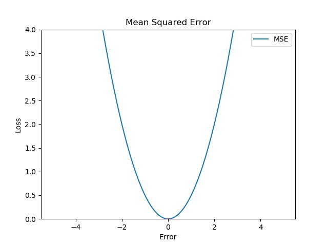
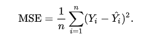
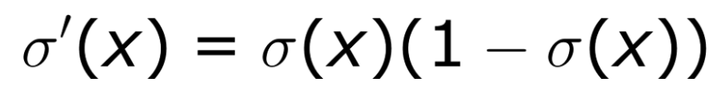
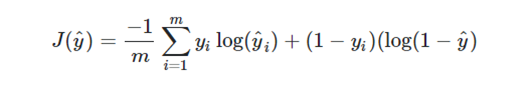
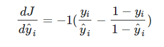
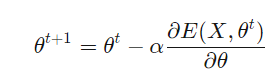
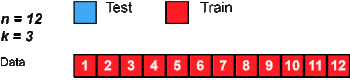

Fázy projektu
III : Trénovanie neurónových sietí
Na Google Colab boli trénované siete pre binárnu klasifikáciu i klasifikáciu podtypov
Implementácia neurónovej siete
- Klasifikačná neurónová sieť
- Regresná neurónová sieť
Implementovaná regresná sieť
Implementovali sme viacvrstvové neurónové siete. Tie sa skladajú z vstupnej vrstvy, skrytých vrstiev a výstupnej vrstvy. Na implementáciu sme použili programovacie jazyky Pyton a Java. 
Aktivačná funkcia - na výstupe sme použili identitu a na ostatných vrstvách sme použili Sigmoidnú funkciu, ktorej výstupom je reálne číslo od 0 po 1.
Počas trénovania sa na konci každej epochy vyhodnotí LOSS funkcia na základe predpovedí neurónovej siete. Pre výpočet loss funkcie sme sa rozhodli použiť funkciu MSE (Mean Squared Error), ktorá určuje priemernú hodnotu odchýlky. Je vypočítaná vzťahom:

Implementovaná klasifikačná sieť
Pri implementácii klasifikačnej siete bolo oproti regresnej sieti potrebné urobiť
niekoľko
zmien. Keďže náš očakávaný výstup môže byť len 1 alebo 0.
Pridali sme preto aktivačnú funkciu sigmoid aj do poslednej vrstvy

Derivácia sigmoidy: 
Ako loss funkciu sme sa rozhodli použiť Binary Cross Entropy, ktorá vyzerá nasledovne

Derivácia Binary Cross Entropy: 
Graf regresnej neurónovej siete
Na grafe 1 je možné vidieť grafické znázornenie trénovania neurónovej siete v priebehu 150 epoch. Pri trénovaní neurónovej siete je dôležité zadať správne parametre. Na grafe 2 môžeme pozorovať zadaný vysoký learning rate ktorý spôsobil pretrénovanie siete


Implementácia učenia
Na učenie neurónovej siete sme použili backpropagation algoritmus. Pri backpropagation algoritme sme počítali gradient stratovej funkcie ,vzhľadom na váhy neurónovej siete. Backwards v názve znamená že algoritmus postupuje cez sieť od poslednej vrstvy k prvej vrstve. Pričom čiastkové výpočty gradientu z jednej vrstvy sa znova využijú pri výpočte gradientu nižšej vrstvy (bližšie k vstupu). Vzorec na výpočet:
K výpočtu gradientu potrebujeme vypočítať gradient stratovej funkcie s ohľadom na váhy. Θt značí parametre neurónovej siete v iterácií t vo výpočte gradientu.
Diagram trénovania a testovania neurónovej siete
Krížová validácia

Metóda zisťovania ako veľmi bude model ovplyvňovať nezávislé vzorky dát. Táto metóda využíva parameter k, ktorý značí na aký počet skupín sa majú dané dáta rozdeliť. Táto metóda je často nazývaná k-fold cross-validation.
Pri krížovej validácií s parametrom k=3 sa dáta rozdelia do troch rovnomerných skupín a sieť bude trénovaná a testovaná na 3 rôznych modeloch. K-1 skupín je použitých na trénovanie a 1 skupina je určená na testovanie.
Ukážka krížovej validácie s parametrom 3:
Budúca práca
- Aplikácia implementovaných modelov na medicínskych dátach: detekovanie nukleotidového polymorfizmu pri rakovine prostaty
- Porovnanie komplexnosti a úspešnosti na reálnych dátach medzi našimi modelmi: MARS, SVM & NN
- Pokročilá implementácia NN v aplikačných rámcoch Tensorflow, Pytorch.. a prezentácia reálnych výsledkov na reálnych dátach za účelom podpory detekcie a rozhodovania v medicíne